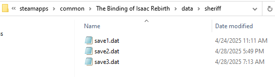

Saving data
Author(s): catinsuranceTags:
Storing and loading data is surprisingly simple, but how you structure your mod's save data leaves a lot to consider.
Saving and loading⚓︎
Let's start with the most basic concept, which is saving and loading.
Save data for mods are stored in the data folder in your game's directory. This is so that mod save data is not deleted when your mod is uninstalled. The save data for your mod is located within a folder in data that is named after your mod's folder name.

Notice that there are 3 files in here. Each file in here corresponds to a save file in game. So save1.dat corresponds to the left-most save file, save2.dat is the middle save file, and save3.dat is the right-most one. Save data is stored in plain text, so you can open these up in a text editor if you'd like.
Note that saving and loading data is relative to a save file. As you'll see later on, the methods that you use to save and load data can only be called within a run, and will save and load from the file corresponding to the save file you're playing on. This is for security reasons, as mods being able to create arbitrary files on the user's computer would be very dangerous.
There are 4 functions that are a part of your Mod Reference that you need to know about:
HasData()- Returns abooleanthat signifies if your mod has any save data.LoadData()- Returns thestringstored in thesaveX.datfile.SaveData(string data)- Saves an arbitrarystringto thesaveX.datfile. Keep in mind that the file this saves to is decided by the file the run is being played on.RemoveData()- Deletes thesaveX.datfile if it exists.
The actual act of saving a string to a file is very straightforward.
1 2 3 4 5 6 7 8 9 10 | |
In the above example, we check to see if our mod has save data when a run is started. If they do, we load that save data (stored as a string) and print it to the debug console. Otherwise, we create new save data with the value "Test!".
Structuring save data with JSON⚓︎
We know how to save data, but how do we structure it? Isaac has a built-in JSON library that we can use to convert our Lua tables into JSON that we can save. We can store our mod's data in a table, then store it using the JSON library. There are caveats to this that will be covered later on, but observe the following example to see the most basic implementation of this:
1 2 3 4 5 6 7 8 9 10 11 12 13 14 15 16 17 18 | |
In the above example, we check to see if our mod has save data when a run has started. If they do, we deserialize the JSON string that is our save data. To "deserialize" is to convert data from a "serialized" format (such as a string) back into a data structure we can use (in this case, a table). json.decode takes a string and returns the decoded data, which in our case is a table with a few values in it.
If we don't have save data for our mod, we'll create a table and serialize it. To serialize is to convert a data structure like our table here into a "serialized" format, such as a string. This table can have anything in it, but there are rules we must follow as to not break our save data.
Important caveats with the JSON library⚓︎
There are many things to look out for when it comes to the built-in JSON library that Isaac provides. Below is a comprehensive list of all issues that you may run into with encoding and decoding data with the JSON library.
Sparse arrays⚓︎
For starters, let's look at how it handles sparse arrays. A sparse array is an array (an ordered table where all the keys are integers, starting from 1) with gaps in it. The JSON encoder will fill in the gaps with "null" until there are no gaps left, even if this requires inserting millions of values.
1 2 3 4 5 6 7 8 9 10 11 12 13 14 15 16 17 | |
Invalid table key type⚓︎
Tables can only have either strings or integers as keys. You should not attempt to encode tables with functions, other tables, decimals (floats), or userdatas (Isaac objects such as Vectors) as keys to values. Additionally, the JSON encoder will attempt to convert any decimal (float) keys in a given table to strings, which will lead to unexpected behavior when trying to index the later decoded data with that same decimal.
1 2 3 4 5 6 7 8 9 10 11 12 13 14 15 16 17 18 | |
Mixed table key types⚓︎
Tables can only have either strings or integers as keys. Mixing the two would cause all integers to be converted to strings, which is unexpected as it's quite literally not what you saved.
1 2 3 4 5 6 7 8 9 10 11 12 13 14 15 16 17 18 19 20 | |
Invalid numbers⚓︎
Infinite numbers or NaN numbers are unable to be read by the JSON decoder, causing data to become broken.
1 2 3 4 5 | |
Improper value types⚓︎
Tables containing anything other than strings, numbers, booleans, or other tables cannot be encoded by the provided JSON library.
1 2 3 4 5 6 | |
Circular references⚓︎
Tables containing a reference to itself or a table higher up in its hierarchy will cause stack overflows.
1 2 3 | |
Further resources⚓︎
- IsaacSaveManager is a library that will handle the complicated aspect of saving data for you, as well as give numerous extra utilities for saving data pertaining to the room, run, and floor.